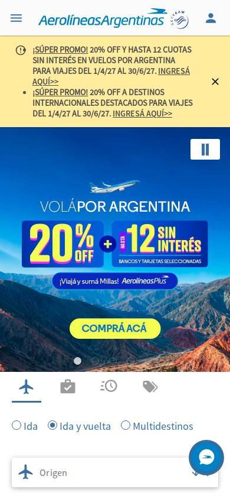
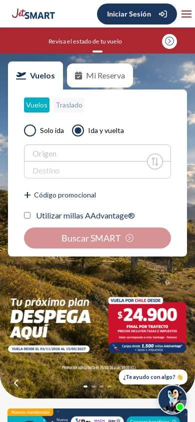

Turismo y reservas
Los seleccionados
Los tres sitios más visitados de Argentina, según estadísticas de tráfico.
En resumen: lo que hacen los líderes
La pantalla de inicio de cada uno


Estilo visual
Colores, imágenes, tipografía y cuánta información muestran.
Tu estilo visual debería…
- Fotos grandes de destinos y la oferta en números enormes con un color de acento.
- Dos colores de marca como máximo en la interfaz.
Lo que tienen en común: Fotos grandes de destinos con el descuento o el precio en números enormes. La paleta es acotada y el amarillo o el rojo se usan para la oferta.
La paleta de cada uno
Medida sobre la primera pantalla. Los colores de marca salen del header; el resto muestra cuánto espacio ocupa cada color.
Así lo resuelve cada uno
Ficha comparativa
| Aspecto | Aerolíneas Argentinas | JetSMART | Central de Pasajes |
|---|---|---|---|
| Paleta | Acotada: azul + amarillo para ofertas | Acotada: azul oscuro + rojo | Acotada: violeta + turquesa |
| Imágenes | Foto grande de paisaje argentino | Foto grande de paisaje | Ilustración de promo + fotos de ciudades |
| Tipografía | Sin serifa, títulos muy grandes | Sin serifa, precio enorme | Sin serifa, números enormes |
| DensidadIgual en todos | Media | Media | Media |
| Botones | Amarillo y azul | Rojo | Violeta |
Barra superior
La franja fina de arriba de todo.
Tu barra superior debería…
- Franja fina de color contrastante con un solo mensaje: la promo vigente o un aviso útil.
Lo que tienen en común: Los tres usan una franja fina arriba del banner con un aviso o una promoción, en un color que contrasta (amarillo o rojo).
Así lo resuelve cada uno


Ficha comparativa
| Aspecto | Aerolíneas Argentinas | JetSMART | Central de Pasajes |
|---|---|---|---|
| Existe | Sí, franja amarilla de promociones | Sí, franja roja «Revisá el estado de tu vuelo» | Sí, franja amarilla de promociones |
| Contenido | Cuotas sin interés y descuentos | Aviso de servicio | Descuento pagando con la app |
Header
La franja de arriba con el logo y los accesos.
Tu header debería…
- Header blanco con logo a la izquierda.
- A la derecha, accesos para gestionar: «Mi reserva», «Check-in» o «Mis pasajes», más «Iniciar sesión».
Lo que tienen en común: Header blanco y simple con el logo a la izquierda y, a la derecha, los accesos para gestionar un viaje ya comprado.
Así lo resuelve cada uno

Ficha comparativa
| Aspecto | Aerolíneas Argentinas | JetSMART | Central de Pasajes |
|---|---|---|---|
| FondoIgual en todos | Blanco | Blanco | Blanco |
| LogoIgual en todos | A la izquierda | A la izquierda | A la izquierda |
| A la derecha | Centro de ayuda e «Iniciá sesión» | Botón «Iniciar sesión» (azul oscuro) y país | «Devolver mi pasaje» y «Reenviar mi pasaje» |
| Accesos de gestión | Mi reserva, Check-in | Mi reserva, Beneficios | Devolver y reenviar pasaje |
Primera pantalla
Lo primero que se ve debajo del header.
Tu primera pantalla debería…
- El buscador de viajes es el protagonista, visible sin bajar: origen, destino, fechas y pasajeros.
- Al lado o encima, la oferta del momento con el precio o el descuento en letras grandes.
- Un botón de color fuerte para buscar o comprar.
Lo que tienen en común: El inicio es el buscador de viajes: los tres piden origen, destino, fechas y pasajeros en la primera pantalla, junto a una oferta con el descuento o el precio en grande.
Así lo resuelve cada uno
Ficha comparativa
| Aspecto | Aerolíneas Argentinas | JetSMART | Central de Pasajes |
|---|---|---|---|
| Formato | Foto de destino a todo el ancho + buscador encima | Foto de destino + buscador debajo | Buscador en bloque de color + promo al lado |
| Buscador de viajesIgual en todos | Sí: Origen, Destino, fechas, pasajeros | Sí: Origen, Destino, fechas, pasajeros | Sí: Origen, Destino, fechas, pasajeros |
| Oferta visible | «20% OFF + 12 sin interés» | Precio grande «$24.900» en rojo | «20% OFF + 3 cuotas sin interés» |
| Botón principal | «Compra acá» | «Compra AQUÍ» rojo | «Buscar» violeta |